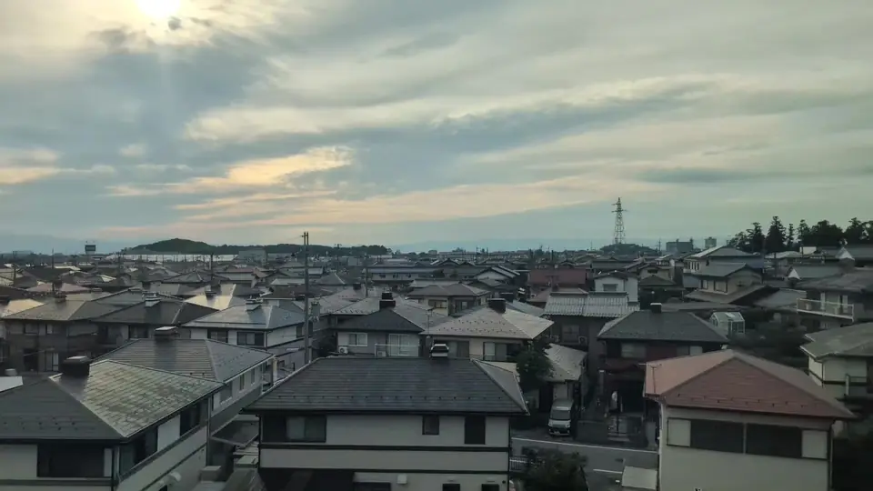

- Section
- Maibara → Kyoto
- Seat side
- Seat E · mountain side
- Timing
- About 116 minutes after leaving Tokyo on a Nozomi train
- Photos
- 3 photos
What kind of castle is Hikone?
Hikone Castle is a hilltop-plain castle on the roughly 136-meter Mt. Hikone in Hikone City, Shiga Prefecture. Construction began in 1604 under Ii Naotsugu (Naokatsu), successor to Ii Naomasa, and was largely completed around 1622. For the post-Sekigahara Tokugawa regime, Hikone commanded a vital position facing Kyoto and Osaka, and the shogunate hurried its completion — even reusing timber and stone from nearby castles such as Sawayama, Otsu, Nagahama and Odani. Throughout the Edo period the Ii family ruled the Hikone domain from here, and in the late Edo period the castle was the home of the shogunate's chief councillor Ii Naosuke.
More: Hikone Castle official siteAgency for Cultural Affairs: Hikone Castle (National Treasure)Zusshi: Castles from the Shinkansen (Japanese only)
If you are traveling from Tokyo toward Shin-Osaka, start watching the Seat E · mountain side window as you approach Maibara → Kyoto. If you are traveling toward Tokyo, the order is reversed.
One of Japan's twelve surviving keeps — and five National Treasures
Japan has twelve surviving pre-modern castle keeps, known collectively as the genson junitenshu. Hikone's three-tier, three-story keep is one of them, and it is also one of the five keeps designated as National Treasures (along with Himeji, Matsumoto, Inuyama and Matsue). The relatively small tower is admired for its intricate roofline — combining hip-and-gable, kara-hafu curved gables, and standard gables — and for its refined decoration. Beyond the keep, many other Edo-era structures survive on the grounds (turrets, gates, connecting walls), most of them Nationally Designated Important Cultural Properties.
At its foot, the Genkyu-en garden — a daimyo-style stroll garden combining a pond with the keep in the background — is one of Hikone's most iconic views. The old castle-town streets still evoke early-modern Hikone, and areas like Yumekyobashi Castle Road preserve a walkable feudal-period feel. Shiga Prefecture has been pursuing UNESCO World Heritage inscription for the castle, underscoring its central place in Japanese castle history.
From the train, look toward Seat E for the 'small white building on a slightly higher green hill beyond the town.' At this distance it is not large, but because Mt. Hikone rises alone from the surrounding plain, the shape is surprisingly clear once you know what to look for. Aim for the moment a few tens of seconds after Maibara when the buildings briefly thin out.
Location at a glance
Open mapSwitch between the spot and the Shinkansen viewpoint.
How to catch Hikone Castle
1. Choose the window first
As you approach Maibara → Kyoto, start watching from Seat E · mountain side. Use Live Guide while riding, or the map on this page before you board.
The clearest view lasts only a few seconds. Decide the seat side and window direction before it arrives rather than reaching for your camera late.
2. Highlights
A little after Maibara, look far off on the Seat E side for a small green hill 'poking up just above the roofs.' If you can pick out a white speck at its summit, that is Hikone Castle. Binoculars or a zoom really shine here. If you want to feel the castle's true scale, plan a stopover from Maibara on another ride.
Hikone Castle in photos


 Related
Gifu Castle
Related
Gifu Castle
 Related
Nangu Taisha Grand Torii
Related
Nangu Taisha Grand Torii
 Related
CELLOTAPE Wall Sign
Related
CELLOTAPE Wall Sign